The shift toward digital assessment has transformed higher education, offering flexibility but introducing vulnerabilities like academic dishonesty. Existing solutions, mostly browser-based, lack operating system-level access to reliably enforce security, creating an operational gap. ExamApp bridges this gap by providing a secure, desktop-native examination platform with AI-assisted proctoring and real-time monitoring.
Existing online examination platforms suffer from critical shortcomings: 1. Insufficient Security Enforcement: Browser-based tools cannot reliably detect system-level violations. 2. Lack of Real-Time Identity Verification: Continuous verification during exams is rarely implemented. 3. Poor Examiner Visibility: Examiners lack real-time insights into student behavior during live exams. 4. Fragile Session Management: Network disruptions often cause data loss. 5. Limited Assessment Flexibility: Mixed-format (MCQ + Essay) assessments are poorly supported.
Aim: To develop ExamApp, a secure desktop examination platform for conducting proctored assessments with real-time monitoring, AI-assisted identity verification, and robust session management. Objectives: - Develop a role-based authentication system with facial biometric enrollment. - Implement comprehensive exam lifecycle management (Draft → Scheduled → Live → Closed). - Build a desktop-native environment that enforces OS-level integrity controls via a custom C++ hook DLL. - Integrate AI-assisted proctoring (MediaPipe, FaceNet) for continuous identity and liveness verification. - Design a real-time communication layer using WebSockets for live monitoring. - Develop a resilient session management system with encrypted local caching. - Create reporting modules for detailed grading and integrity analytics.
Scope: Covers User Management, Exam Lifecycle Management, a Secure Exam Environment, Real-Time Communication, Session Reconnection, Grading, and Reporting. Limitations: Windows only; no web/mobile client; AI runs locally rather than via a microservice; development database is SQLite; plain HTTP/WS (no TLS currently).
Existing proctoring solutions impose high costs and privacy concerns by sharing biometric data with third parties, while open-source alternatives lack system-level security. ExamApp was built to provide a secure, self-hosted, and cost-effective alternative while offering an extensive learning opportunity in full-stack desktop development, real-time networking, and computer vision.
The Iterative and Incremental Development Model was chosen. This allowed for continuous integration and testing of core modules (e.g., integrating the Python UI with the native C++ hooks and WebSocket backend), mitigating technical risks early and adapting to evolving requirements.
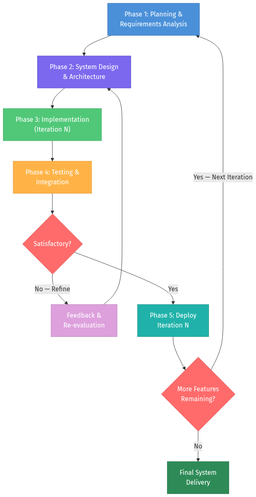
websockets, python-jose, passlib.requests, cryptography, psutil, C++ custom input_hooks.dll.facenet-pytorch, opencv-python, mediapipe.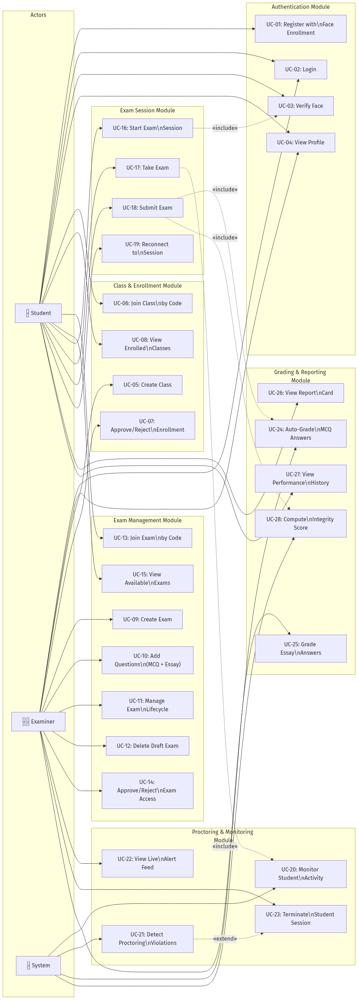
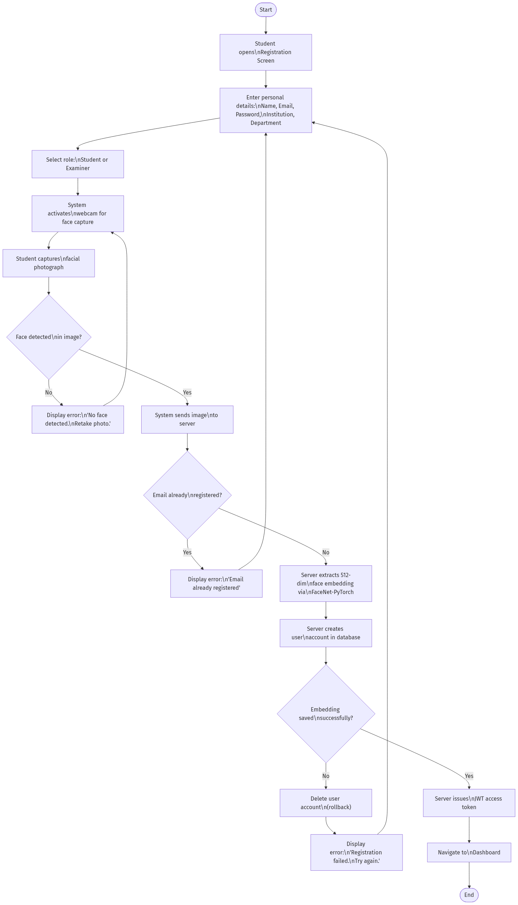
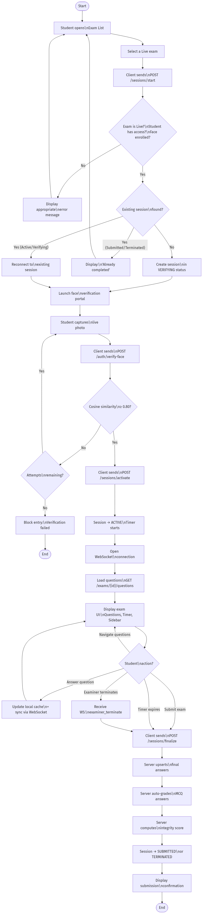
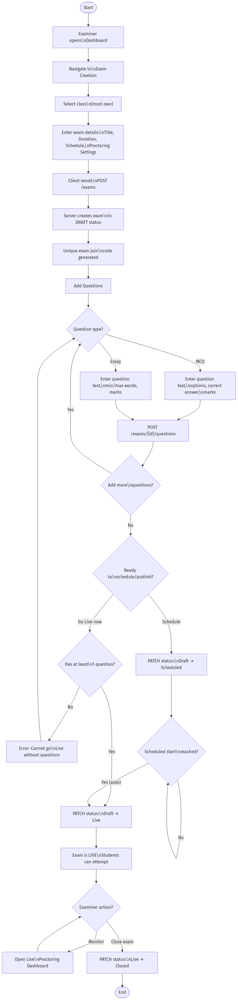
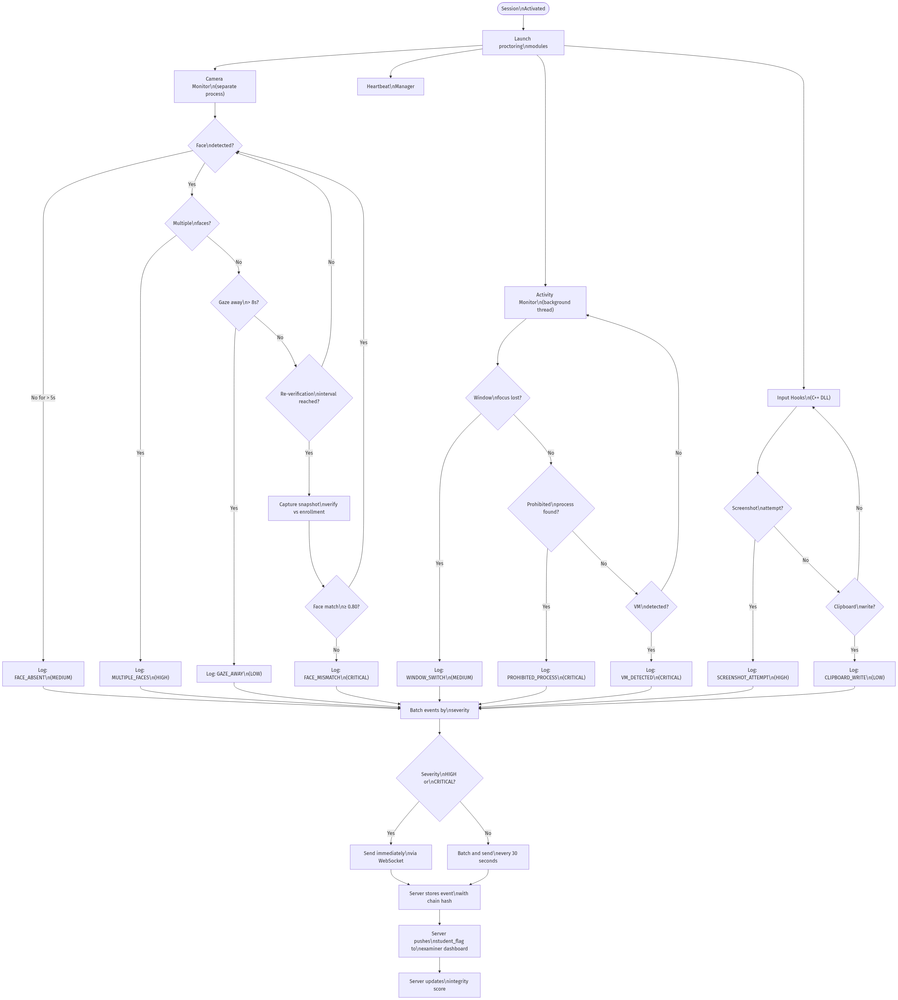
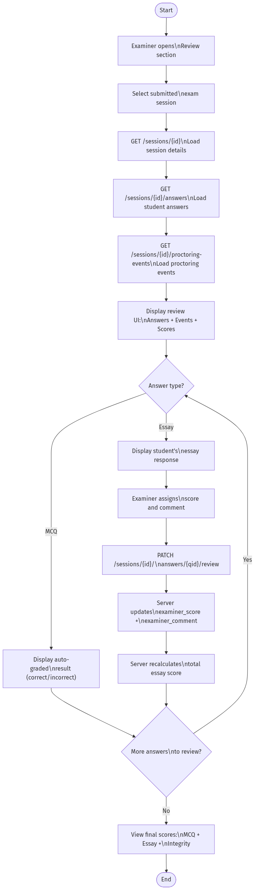
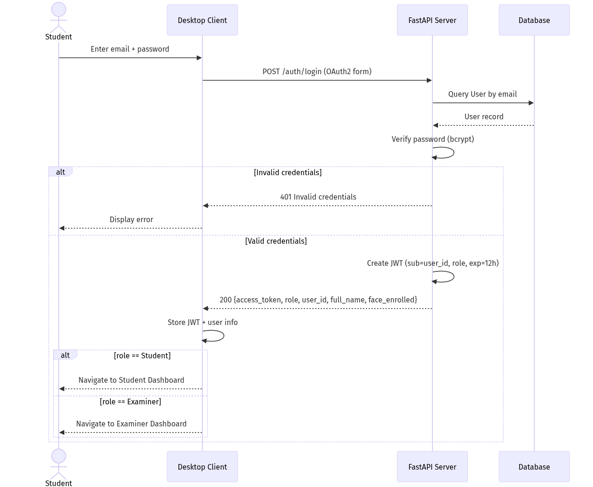
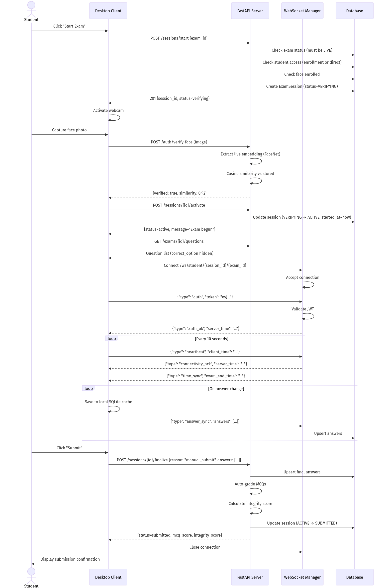
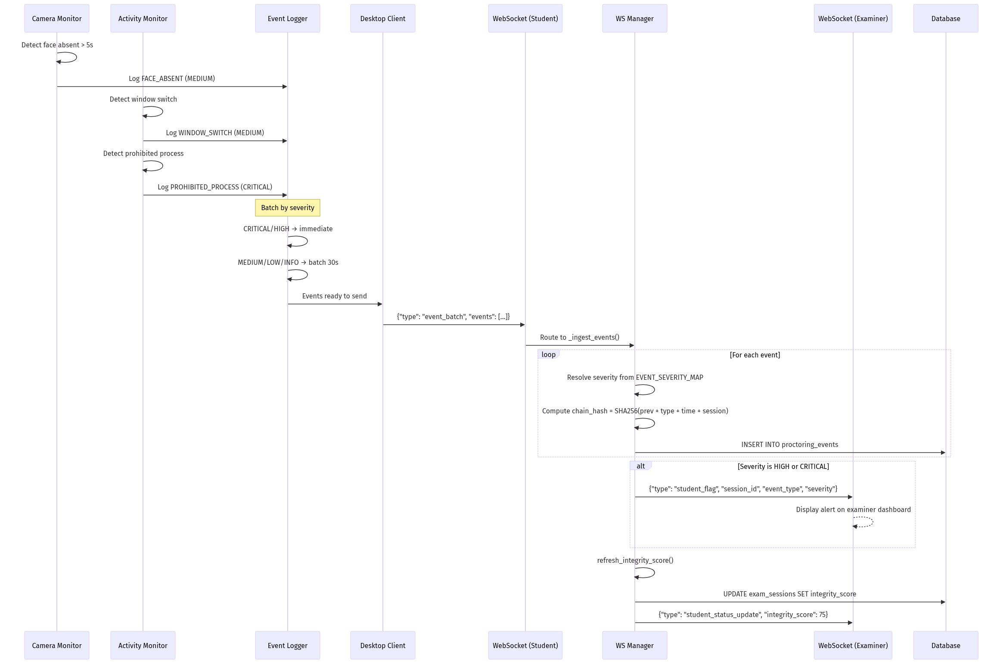
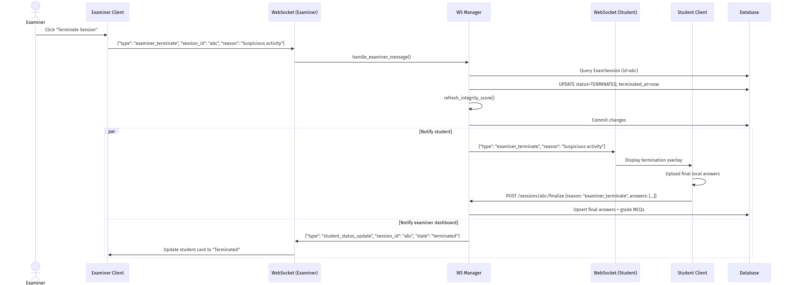
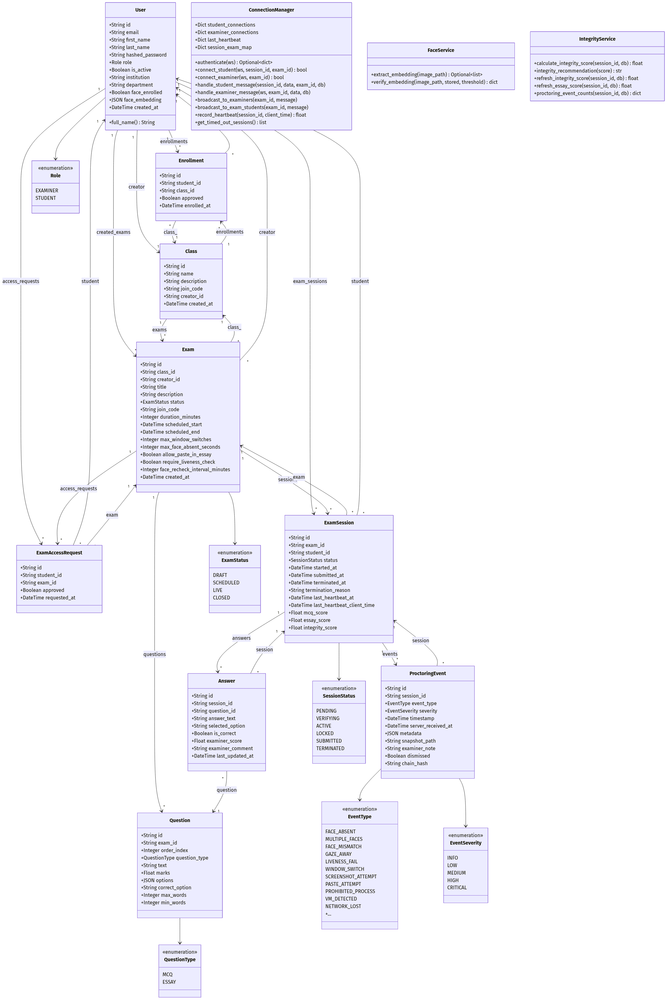
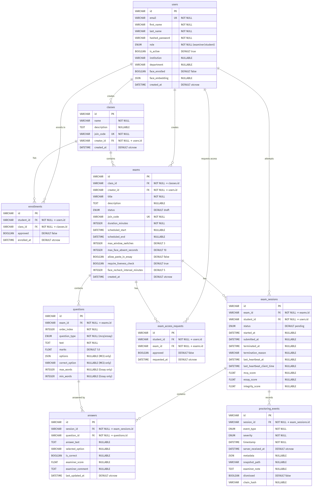
The database relies on several core tables:
- users: Stores authentication details, roles, and biometric embeddings.
- classes & exams: Represents hierarchical grouping of exams and their lifecycle configurations.
- questions & answers: Stores assessment content and student responses.
- exam_sessions: Tracks student progression through an exam, including grades and integrity scores.
- proctoring_events: Logs integrity violations linked to specific sessions.
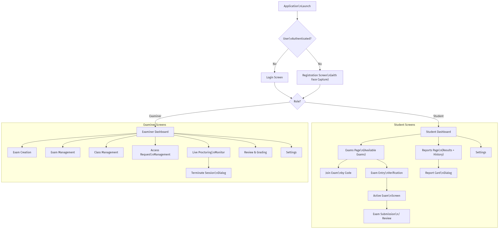
(Screenshots to be placed inline in Section 4.2)
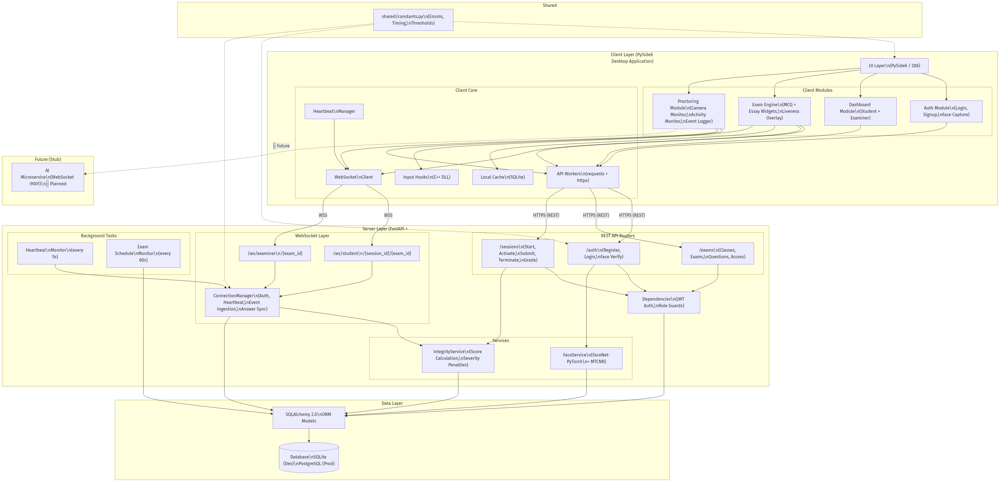
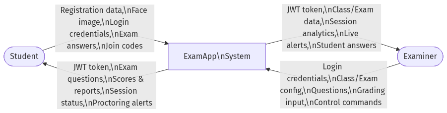
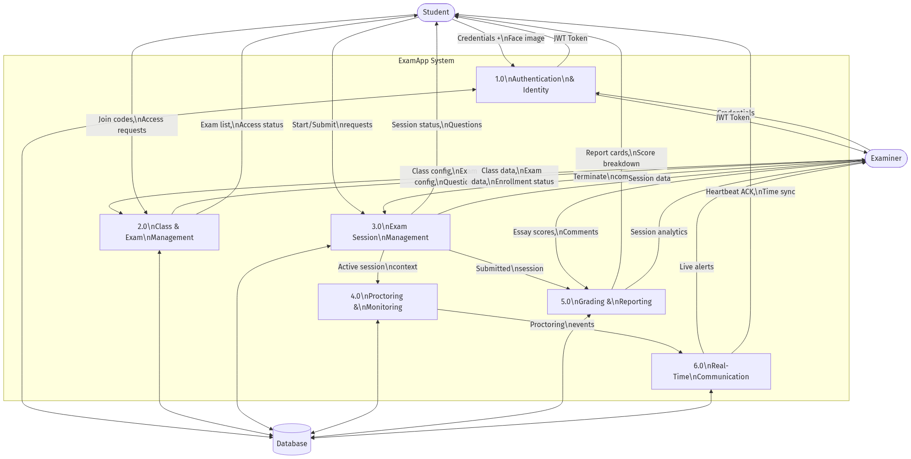
The application is structured into a desktop client (PySide6) and a backend server (FastAPI). - Server: Runs in an isolated virtual environment, exposing REST endpoints and WebSocket channels for real-time data sync. - Client: A Windows-native executable that uses a two-process architecture to isolate AI facial processing from the main UI thread, ensuring smooth performance. It leverages a compiled C++ DLL to enforce strict keyboard/mouse hooks during active exams.
(Note: Visuals to be inserted during document assembly)
Testing prioritized End-to-End (E2E) flows validating the integration of the PySide6 UI, the FastAPI backend, and WebSocket streams using pytest and pytest-qt. Fault injection tests verified offline caching resilience.
| Test ID | Description | Expected Output | Status |
|---|---|---|---|
| TC-01 | Create & Publish Exam: Examiner creates exam, adds questions, and makes it Live. | Exam state transitions to LIVE successfully. |
Pass |
| TC-02 | Student Check-In: Student verifies identity via liveness check to enter exam. | Session becomes ACTIVE and timer starts. |
Pass |
| TC-03 | Liveness Failure: Simulation of failed face detection during entry. | UI blocks entry, session terminates without crashing. | Pass |
| TC-04 | Offline Resilience: Disconnect network during exam, reconnect after 30s. | Local cache saves answers; syncs perfectly on reconnect. | Pass |
| TC-05 | Proctoring Flag: Student switches windows; event is logged. | Examiner dashboard receives high-severity WebSocket alert. | Pass |
| TC-06 | Remote Termination: Examiner unilaterally ends student session. | Student UI immediately locks and closes the session. | Pass |
ExamApp successfully delivered a secure, desktop-native assessment tool. It implements robust dual-workflow authentication, real-time proctoring via computer vision and system-level hooks, and a fault-tolerant session manager capable of handling network drops without data loss.